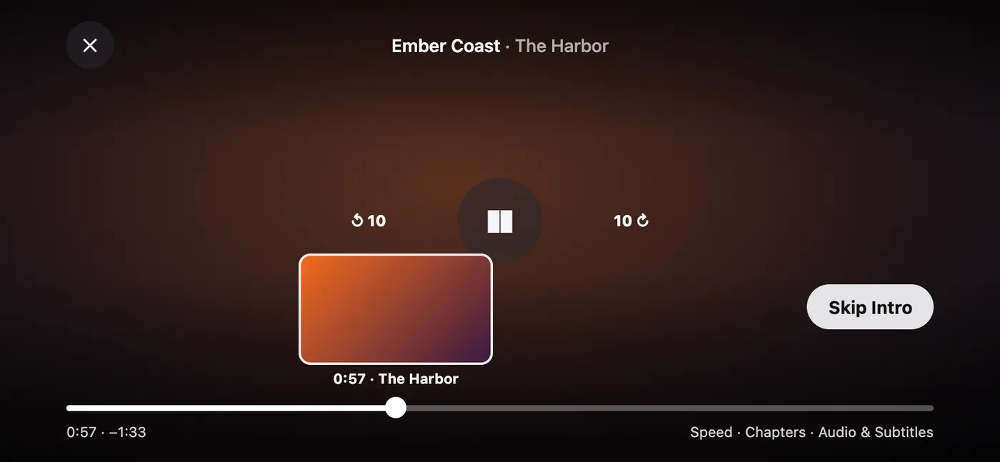
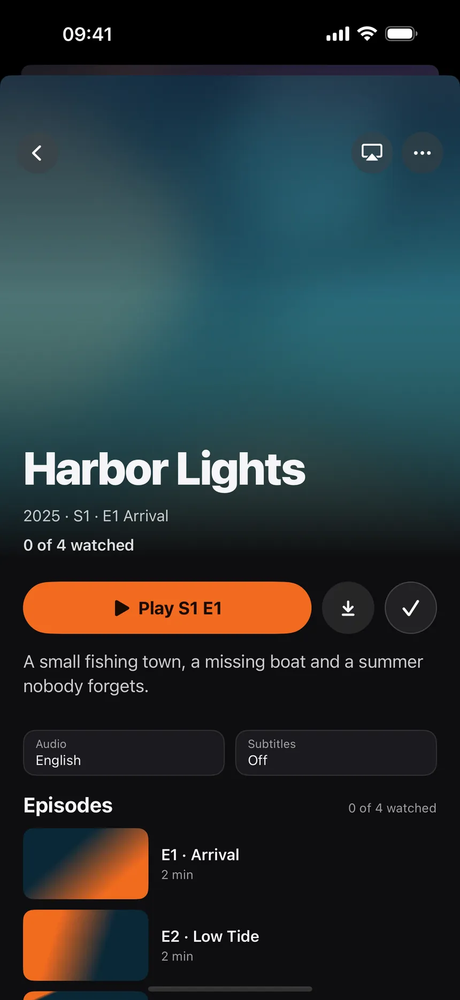
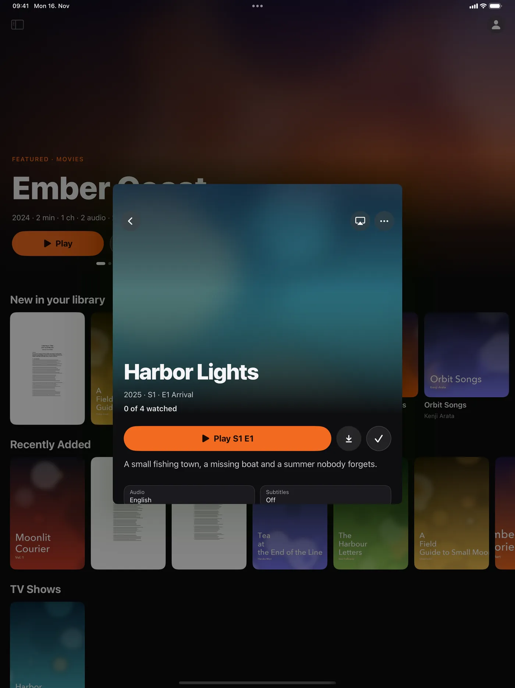
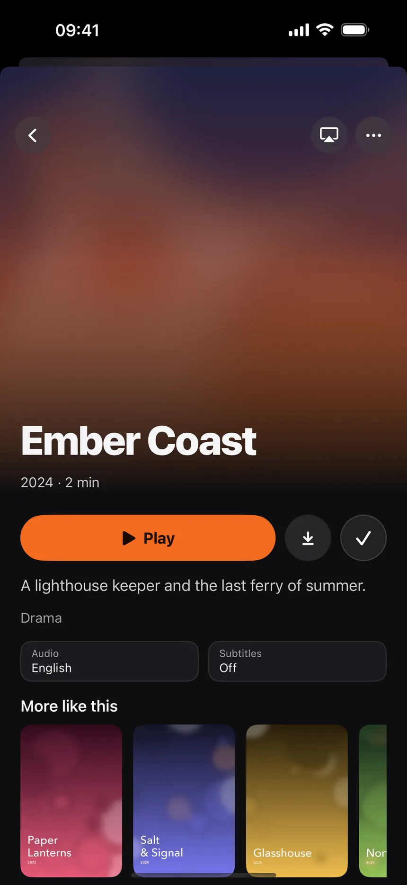
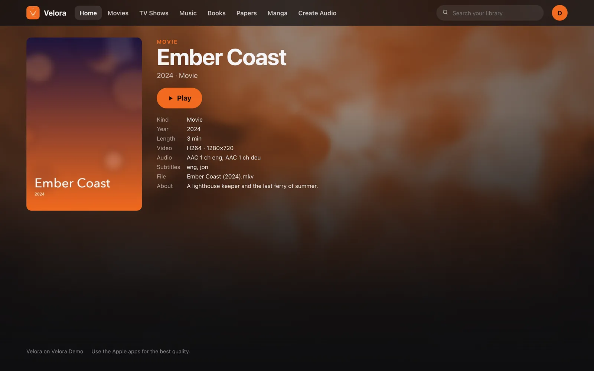
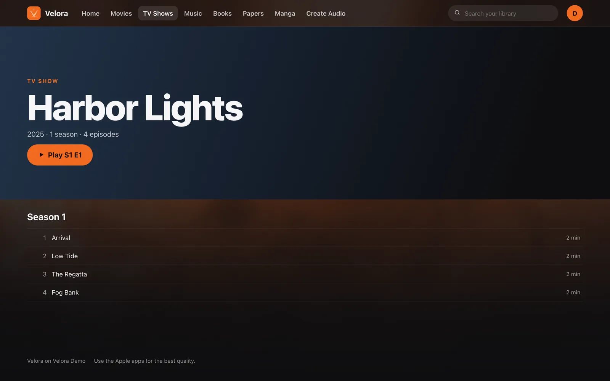

Movies and shows, done properly.
Velora knows your shows are shows: seasons, specials, extras, intros and credits. It opens instantly, plays the original file whenever it can, and picks up exactly where you left off on any device.
Scrub with pictures, jump by chapter.
Drag the timeline and a thumbnail shows exactly where you'll land. Chapters come from the file and appear as marks on the timeline and in a list. Every audio language and subtitle is listed with a proper name, including SDH, Forced, Signs & Songs and Commentary.
- Trick-play thumbnails generated on your Mac
- Double-tap or pinch to switch between fill and fit
- Image subtitles (PGS, VobSub) are labelled and never switched on by surprise
- Picture in Picture, AirPlay and Live Activities

Skip Intro, Skip Recap, Skip Credits.
Segments come from MKV chapters, from Jellyfin intro data, or from matching the audio across a season. Auto-skip is optional. When an episode ends, a countdown card shows the next episode's still, with Watch Credits if you'd rather stay.
- “Are you still watching?” after three episodes
- Sleep timer for the last episode of the night
- Every episode listed with its real title, with watched checkmarks and time left


Filter, sort, continue.
Every library can be filtered by all, in progress, not started or finished, and sorted by date added, last played, title, year or progress. Detail pages show the audio and subtitle tracks before you press play, and “More like this” comes from your own taste.


Starts in well under a second.
On your home network, movies and shows usually start in well under a second. H.264 and HEVC are copied, not re-encoded; only formats a device can't play, such as DTS or TrueHD audio, are converted, using the Mac's hardware media engine. Far seeks open a new stream at the target instead of waiting.

Downloads for the plane.
Download movies and episodes on iPhone and iPad in Original or Smaller quality; MKV files are converted to MP4 on the server so they play offline. Music, audiobooks, books, papers and manga download too. Remove one, or Remove All.
Your year, on your server.
Replay looks back at what you watched, listened to and read this year: top shows, artists and books, minutes, streaks and firsts. It's computed on your own server from your own history and shared with the system share sheet when you want to.